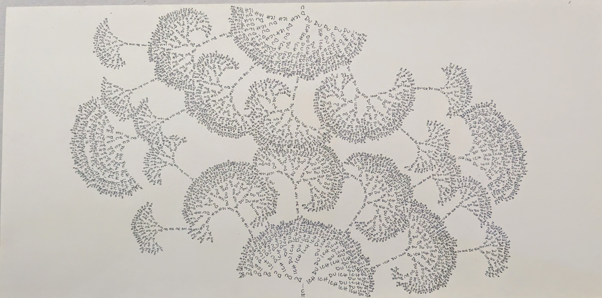
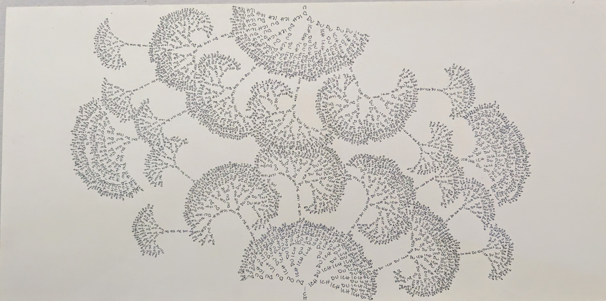

Fraktal der Entscheidung
MITSUBISHI PENCIL auf schwarzem Karton, 50 × 70 cm
Jahr: 2025
Dieses Werk ist Teil einer Serie wachsender Systeme. Jede Linie folgt einer Entscheidung, jede Verzweigung ist Ausdruck einer möglichen Welt.
Was zunächst wie ein rationales Raster erscheint, entpuppt sich als poetischer Körper: fragil, entschlossen, eigenwillig.
„Fraktal der Entscheidung“ ist nicht geplant – es entsteht im Tun. In der Wiederholung zeigt sich ein Rhythmus, der sich selbst verändert.
In der Mitte: ein Puls. Am Rand: das Schweigen der noch ungezogenen Linien.
Dieses Bild ist auch Teil einer künstlerischen Auseinandersetzung mit interaktiven Entscheidungsstrukturen, die in Zusammenarbeit mit einer KI entwickelt wurden. Es fragt: Was passiert, wenn wir jedes Wenn wirklich gehen?

Der Sicherste Ort
Fineliner auf Papier, 30 × 30 cm
Ein Netz aus Linien durchzieht Europa. Keine Grenzen, keine Nationen – nur Bewegungen. Die Knoten dieser Zeichnung markieren die Drehorte eines dokumentarischen Suchens:
Der Sicherste Ort, ein Film von Iris Janßen und Verena Kuri.
Was bedeutet Sicherheit in einer Zeit, in der alles kippt – politisch, ökologisch, persönlich? Diese Zeichnung entstand lange vor der Fertigstellung des Films, fast wie ein vorsprachlicher Schatten dessen, was später erzählt wurde. Linien fließen über den Kontinent wie Fragen, die sich nicht mehr auslöschen lassen. Sie verbinden Städte, Menschen, Erinnerungen – doch sie halten nichts fest. Alles ist in Bewegung, in leiser Resonanz mit dem Ungewissen.
Die Zeichnung steht selbst wie ein Dokument: ein kartografisches Gewebe, das nicht verortet, sondern einfühlt. Vielleicht ist der sicherste Ort kein Ort. Sondern das, was entsteht, wenn wir hinsehen, aushalten, antworten.